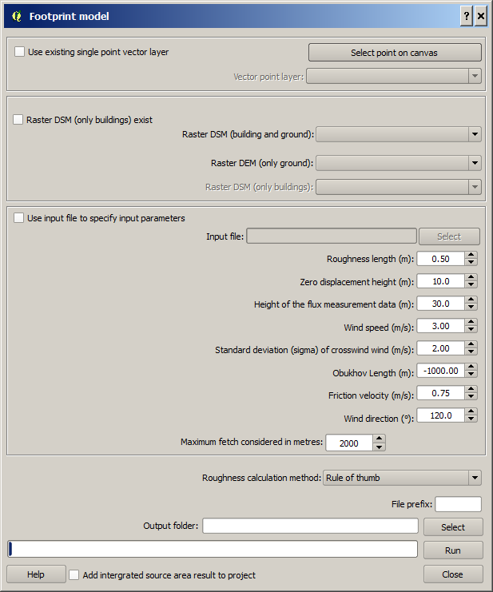

The Footprint Model plugin calculates various morphometric parameters
based on digital surface models. These morphometric parameters are:
-
Mean building height (zH).
The average building heights from ground in meters.
-
Standard deviation of
building heights (zHσ).
-
Maximum building heights
(zHmax).
-
Plan area index (λP).
Fraction of buildings related to total ground area.
-
Frontal area index (λF).
Fraction of building walls in wind direction related to total ground area.
-
Roughness length (z0).
A parameter of some vertical wind profile equations that model the horizontal
mean wind speed near the ground; in the log wind profile, it is equivalent to
the height at which the wind speed theoretically becomes zero.
-
Zero displacement height
(zd). The height in meters above the ground at which zero wind speed
is achieved as a result of flow obstacles such as trees or buildings.
The morphometric parameters above are used to describe the roughness of a
surface and are included in various local and mesoscale climate models.
Footprint models can be used to determine the likely position and influence of
the surface area which is contributing to a turbulent flux measurement at a
specific point in time and space with imposed boundary conditions (e.g.
meteorological conditions, sources/sinks of passive scalars or surface
characteristics). The principle of footprint models is that the measured flux is
the integral of all contributing surface elements, with a ‘footprint function’
describing the relative fractional contribution of a discretized area.
The model employed here is the analytical footprint model of Kormann and
Meixner (2001). The mathematical basis of the model includes a stationary
gradient diffusion formulation, height independent cross-wind dispersion, power
law profiles of mean wind velocity and eddy diffusivity and a power law solution
of the two-dimensional advection-diffusion equation.
The final solution of the footprint function is calculated by fitting the
power laws (mean wind and eddy diffusivity) to Monin-Obukhov similarity
profiles. As with all models the limitations should be appreciated which include
(but are not limited to) assumptions of Monin-Obukhov similarity theory, the use
of power law profiles, assumptions of horizontally homogenous flow and
assumptions of stationarity during the meteorological or scalar variable input
period (i.e. their averaging period; typically 30 – 60 minutes).
Preferably, a ground and 3D object DSM and a DEM should be used as input
data. The 3D objects are usually buildings but can also be 3D vegetation (i.e.
trees and bushes). A 3D object DSM with no ground heights makes it also possible
to derive the parameters.
The Image Morphometric Parameters (Point) is located at
UMEP -> Pre-Processor -> Urban Morphology
-> Image Morphometric Parameters (Point).
When you run plugin, you will see the dialog shown below. It consists of
four sections. The top section let you select a point on the map canvas by
either clicking at a location or by selecting a ´n existing point from a point
vector layer. The next section set the parameters for the area of interest where
the morphometric parameters are calculated. You also set the search interval in
degrees. The next section helps you to specify the input data regarding
buildings and ground. The bottom section is for specifying output and for
running the calculations.

Click on this button to create a point from where the calculations will
take place. When you click button, the plugin will be disabled until you have
clicked the map canvas.
Tick this in is you want to use a point from a vector layer that already
exist and are loaded to the QGIS-project. The
Vector point layer
dropdown list will be enabled and include all point vector layer available.
Tick this in if a 3D-object DSM without ground heights is available. 3D
objects (e.g. buildings should be meters over ground.
A raster DSM (e.g. geoTIFF) consisting of ground and e.g. building height
(meters above sea level).
A DEM (e.g. geoTIFF) consisting of pixels with ground heights (meters
above sea level).
A DSM (e.g. geoTIFF) consisting of pixels with object (e.g. buildings or
vegetation) heights above ground. Pixels where no objects are present should be
set to zero.
An input text file (.txt or .csv) containing the required inputs to the
model (see below) with associated time stamp. An example:
iy id it imin z_0_input z_d_input z_m_input wind sigv Obukhov ustar dir
2014.00000 1.00000 0.00000 30.00000 1.16710 8.16968 42.13032 5.86567 1.48047
-5457.96436 0.84604 193.86502
2014.00000 1.00000 3.50000 30.00000 1.40072 9.80501 40.49499 3.49045 0.96155
1081.72595 0.50463 185.58742
2014.00000 1.00000 4.00000 30.00000 1.37383 9.61679 40.68321 4.02067 0.98699
854.99005 0.48490 189.04443
[header: year, day of year, hour, minutes of averaging
period, roughness length for momentum, zero plane displacement height for
momentum, effective measurement height of sensor, wind speed, standard deviation
of lateral wind, Obukhov length, friction velocity, wind direction] – For
further descriptions and units see below
First order estimation of roughness length for momentum (z0)
from the concerned wind direction. [m].
First order estimation of the zero-plane displacement height for momentum
length for momentum (zd) from the concerned wind direction. [m].
Effective height of measurement tower = location of sensor above ground
level – first order estimation of zero plane displacement height in the
concerned wind direction (e.g. above). [m].
Horizontal wind speed aligned to the prevailing wind direction. [m s-1].
Standard deviation of the wind in the y direction (lateral wind). [m s-1].
Indication of atmospheric stability for use in Monin-Obukhov similarity
theory. [m].
(
 )
)
Shear stress represented in units of velocity for non-dimensional
scaling. [m s-1].
(
 )
)
Prevailing wind direction during averaging period [o].
The furthest distance upwind considered in the calculation of the
footprint function. [m].
Here, options to choose methods for roughness calculations regarding zero
displacement height (zd)
and roughness length (z0)
are available. For more information, see the online UMEP manual:
‘RT’ – Rule of thumb (c.f. Grimmond and Oke 1998); ‘Rau’ – Raupach 1994;
Bot – Bottema 1998; Mac – MacDonald et al. 1998; Mho – Millward-Hopkins et al.
2011; Kan – Kanda et al. 2013
A prefix that will be included in the beginning of the output files.
A specified folder where result will be saved.
This starts the calculations.
This button closes the plugin.
Two different outputs are generated:
The first is a raster grid which represents the fractional contribution
of each pixel in the array to turbulent fluxes measured at the sensor (i.e. the
footprint function). Each pixel of this grid will be of the same order to the
input grid. Because the user can determine the maximum fetch extent that is
considered, each pixel in the footprint function is weighted as a percentage of
the pixel of maximum contribution. If the footprint model is set to run for more
than one time period (i.e. integrated over time), the weighted footprint
functions are summed. No reweighting procedure is applied to this summation.
The second output is a textfile, which specifies the
time dimensions of measurements, the initial aerodynamic and meteorological
parameters which were input to the model and finally the weighted geometry in
the footprint and thus the newly calculated roughness length (z0) and
displacement height (zd) according to the user specified method. This
is of the form:
“iy id it imin z_0_input z_d_input z_m_input wind sigv Obukhov ustar dir fai pai zH zMax zSdev zd z0”
[year, day of year, hour, minutes of averaging period,
roughness length for momentum, zero plane displacement height for momentum,
effective measurement height of sensor, wind speed, standard deviation of
lateral wind, Obukhov length, friction velocity, wind direction, building
frontal area weighted according to footprint function, building plan area
weighted according to footprint, average height of buildings weighted according
to footprint, maximum building height, standard deviation of building heights,
footprint specific displacement height for specified method, footprint specific
roughness length for specified method]
Remarks
- All DSMs need to have the same extent and pixel size.
Kormann, R., F. X. Meixner, 2001: An analytical footprint model for non-neutral
stratification. Bound.-Layer Meteorol., 99, 207-224.
Bottema, M., P. G. Mestayer, 1997: Urban roughness mapping–validation techniques
and some first results. J. Wind Eng. Ind. Aerodyn., 74, 163-173.
Grimmond, C. S. B., T. R. Oke, 1999: Aerodynamic properties of urban areas
derived from analysis of surface form. J. Appl Meteorol., 38,
1262-1292.
Kanda, M., A. Inagaki, T. Miyamoto, M. Gryschka, and S. Raasch, 2013: A new
aerodynamic parametrization for real urban surfaces. Bound.-Layer Meteorol.,
148, 357-377.
Macdonald, R., R. Griffiths, D. Hall, 1998: An improved method for the
estimation of surface roughness of obstacle arrays. Atmos. Environ.,
32, 1857-1864.
Millward-Hopkins, J., A. Tomlin, L. Ma, D. Ingham, M. Pourkashanian, 2011:
Estimating aerodynamic parameters of urban-like surfaces with heterogeneous
building heights. Bound.-Layer Meteorol., 141, 443-465.
Raupach, M., 1994: Simplified expressions for vegetation roughness length and
zero-plane displacement as functions of canopy height and area index.
Bound.-Layer Meteorol.,
71, 211-216.